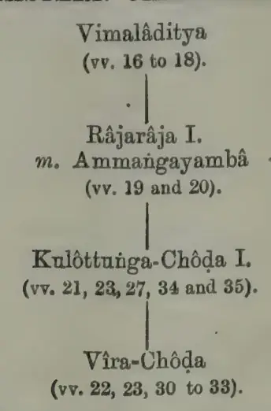
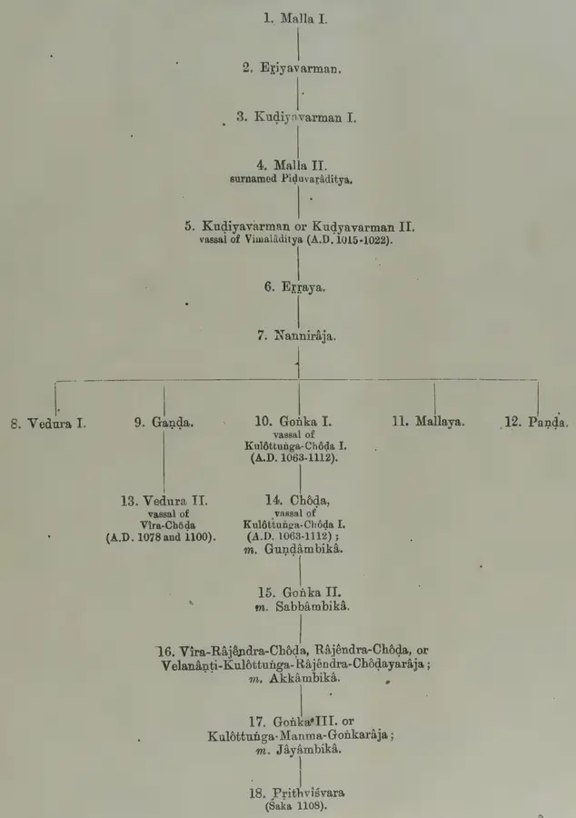

Piṭhāpuram pillar inscription of Prithviśvara ; Śaka-Saṅvat 1108
PITHAPURAM PILLAR INSCRIPTION OF PRITHVISVARA ;
SAKA-SAMVAT 1108.
Pithâpuram, the residence of a Zamîndâr in the Gôdâvarî district, contains a Vaishnava temple, named Kunti-Mâdhava. At the eastern entrance of this temple, in front of the shrine itself, stands a quadrangular stone pillar which bears four inscriptions of different dates. The three first of these are specially interesting on account of their references to the Eastern Châlukya dynasty. In his Lists of Antiquities (Vol. I. p. 24), Mr. Sewell has briefly noticed these three inscriptions; and Dr. Fleet has given occasional extracts from them according to a written copy which had been prepared for the late Sir Walter Elliot.8
The earliest of the four inscriptions is engraved on the whole of the west face and on the upper portion of the south face of the Pithâpuram pillar. It is in a state of fair preservation almost throughout. The alphabet is Telugu. As in other inscriptions from the Telugu country, no perceptible difference is maintained between the secondary forms of i and î; th is rarely distinguished from dh; and consonants are frequently doubled after an anusvâra. The languages of the inscription are Sanskrit and Telugu. It opens with 66 Sanskrit verses, interrupted by two short clauses in Sanskrit prose (lines 18 f. and 30 f.). Lines 139 ff. are in Telugu prose; lines 145 ff. in Sanskrit prose; lines 155 ff. in a mixture of Sanskrit and Telugu prose; and lines 159 ff. again in Telugu prose. The Sanskrit verses 67 to 70 are interrupted by two short sentences in Sanskrit prose (ll. 164 f. and 166 f.). The whole ends with a short sentence in a mixture of Telugu and Sanskrit prose (l. 168 f.) and a three-fold repetition of the auspicious monosyllable śrî.
1 This reading is quite clear in the original. I would translate: 'So long as the enclosed seas with their unequalled water do not sweep over the surface of the earth.'
2 Metre of verses 11 and 12: Slôka (Anushṭubh).
3 Originally bâlênôjita- was engraved; but in the third akshara (nô) the superscript line, which turns ô into ô, appears to have been struck out again.
4 Compare Dr. Fleet's Gupta Inscriptions, p. 84, line 2; the last line of the Jhâlrâpâtan inscription, Ind. Ant. Vol. V. p. 180, where the original also has pûrvvâ; Ind. Ant. Vol. IX. p. 180, v. 33; and Vol. XV. p. 203, v. 23.
5 Here, again, this sign of punctuation is followed by two dots like the sign of visarga.
6 Read -pañchamê or -pañchamyâm.
7 Read Purushôttamdya.
8 Ind. Ant. Vol. XIX. p. 427, and Vol. XX. passim.
The purpose for which the inscription was engraved, is to record that, at the vernal equinox (Mésha-saṅkrânti) of Śaka-Sainvat 1108 (in numerical words, l. 136, and in figures, l. 139), the village of Navakhandavāda in the district1 (vishaya, ll. 148 and 151, or désa, l. 135) of Prôlunâṇdu was granted to the temple which contains the inscription, by Jáyâmbikâ (v. 53), Jáyamâmbâ (v. 66), Jáyamadêvî (l. 143), or Jáyama-mahâdêvî (l. 150), the queen of Goṅka III. and mother of Pṛithviśvara. This grant was communicated to the inhabitants of the district by her son Pṛithviśvara (l. 147), who accordingly appears to have been the ruling prince at the time of the inscription.
The date of the inscription does not admit of verification. The current Śaka year 1108 corresponds to A.D. 1185-86, and the expired Śaka year 1108 to A.D. 1186-87.
The boundaries of the village of Navakhandavāda are specified in lines 154 to 159. Mr. H. Krishna Sastri was informed at Pithâpuram that Navakhandavāda is close to Pithâpuram itself and is still in the possession of the Kuntî-Mâdhava temple. That the district of Prôlunâṇdu included the country on the southern side of Pithâpuram, is proved by the inscriptions of the Bhâvanârâyaṇa temple at Sarpavaram, according to which Sarpavaram belonged to Prôlunâṇdu, a subdivision of Gaṅgagoṇda-Chôda-valanâṇdu.1 The Madras Survey Map of the Pithâpuram Division shows, about 1½ mile E.S.E. of Pithâpuram, a village named “Narakhandravada.” This is probably a mistake or misprint for Navakhandavada and identical with the village granted by the subjoined inscription, the names of whose boundaries, however, cannot be traced on the map.
The remainder of the inscription contains the usual imprecations (l. 159 ff.) and the names of the composer, Ayyapillârya (l. 168), and of the writer, Kaṇṭâchâri of Śrîpithâpuram (l. 169).
The grant proper is preceded by a long account, in Śanskṛit verse, of the dynasty from which Pṛithviśvara traced his descent, and which it may be convenient to call the chiefs of Velanâṇdu; for, the Telugu genitive Velanâṇti is prefixed to the name of Pṛithviśvara's grandfather in line 141, and occurs in many unpublished inscriptions from the Telugu country in connection with the names of Pṛithviśvara's predecessors. Velanâṇdu is twice mentioned in the Gaṇapêsvaram inscription of Gaṇapati.2 According to Mr. Gordon Mackenzie's Manual of the Kistna District, p. 214, it is 'an old name for all the Tsandavôlu country.' This statement is confirmed by the Elavarṣru plates of the Eastern Châlukya king Amma II., according to which Elavarṣru, a village north of Tsandavôlu in the Rêpalle tâlukâ of the Kistna district, belonged to the district (vishaya) of Velanâṇdu.3 In an inscription at Drâkshârâma,4 the 17th chief of the Table on page 35, Goṅka III., is stated to have resided at Sanadavrôlu in Velanâṇdu. This enables us to fix the modern Tsandavôlu, a name which closely resembles Sanadavrôlu, as the former capital of the chiefs of Velanâṇdu.
Like the Ređdis of Koṇdavîdu,5 the chiefs of Velanâṇdu trace their descent from the Chaturthânvaya, i.e. the fourth or Śûdra caste (verse 2). The earlier portion of their genealogy is perfectly fictitious. Thus we are told that the first ancestor who is mentioned by name, Indrasêna, was adopted by, and received the emblems of a sovereign from, the mythical king Yudhishthira and ruled at Kîrtipura in Madhyadêsa (vv. 2 to 5); that, after an interval of unspecified duration, there ruled Kîrtivarman-I. (v. 6); and that, after another interval, he was
1 Sarpavaram is 4 miles north of Cocanada and 7½ miles south of Pithâpuram. The Bhâvanârâyaṇa temple is in its inscriptions called Vîra-Chôda-Vinnagara, i.e. 'the Vishṇu temple of Vîra-Chôda,' to whom it probably owes its foundation; see my Annual Report for 1893-94, p. 5.
2 Above, Vol. III. No. 15, verses 17 and 34.
3 Ind. Ant. Vol. XII. p. 91.
4 No. 268 of 1893 in my Annual Report for 1893-94.
5 See above, Vol. III. pp. 59 and 286.
followed by Mallavarman; his son, Raṇadurjaya I.; his son, Kîrtivarman II.; his son, Raṇadurjaya II.; and his son, Kîrtivarman III. Regarding these statements it may be sufficient to say that the town of Kîrtipura is not known from other sources; that the name Kîrtivarman was probably taken over from the Western Châlukyas; that Raṇadurjaya sounds rather like a biruda than an actual name; and that the name Mallavarman appears to be developed out of Malla and Mallaya, the names of later chiefs.
The son of Kîrtivarman III. is said to have been Malla I., who entered into an alliance with Trinêtra Pallava, started for the conquest of the Dekhan, obtained possession of the Shatsahasra country,1 and took up his residence at Dhanadapura (vv. 9 to 13). The alleged conquest of the Dekhan is evidently based on similar legends as the conquest of the Dekhan which is ascribed to Vijayâditya in the latest inscriptions of the Eastern Châlukya dynasty, with this difference that, while Vijayâditya is said to have been defeated and killed in a battle with Trilôchana-Pallava,2 Malla I. is supposed to have been on friendly terms with the same mythical king, here named Trinêtra Pallava. The same form of the legend appears to have been adopted by the chiefs of Amarâvatî, who bore the title of 'the lord of the Shatsahasra country on the southern (bank) of the river Krîshṇaverṇâ, obtained through the favour of the glorious Trinayana-Pallava.'3 The Yenamadala inscription further shows that the Shatsahasra country,4 i.e. 'the country (containing) Six-thousand (villages),' is identical with the district (vishaya) of Konnâtavâđî, and that the capital of the latter was Dhânyâńkapura, i.e. Amarâvatî in the Sattenapalle tâlukâ of the Kistna district. This close agreement between the Yenamadala and Pithâpuram inscriptions further suggests that the Dhanadapura of the latter is meant for, and a corruption of, Dhânyâńkapura, the old name of Amarâvatî.
The names of the descendants of Malla I. and their relation to each other are given in the Table on page 35. The 5th king of the Table, Kudyavarman II., was a contemporary of the (Eastern) Châlukya king Vimalâditya (A.D. 1015 to 1022), who conferred on him 'the pair of (districts called) Gudravâra' (v. 18). On a former occasion,5 I suggested that the name of this district may be connected with the modern Guđivâđa, the head-quarters of a tâlukâ of the Kistna district. This is now made very probable by a Kâkatîya inscription on the right door-pillar of the Bhîmêsvara temple at Guđivâđa,6 where Guđivâđa itself is stated to have belonged to (the district of) Gudrâra.
1 In an inscription at Drâkshârâma (No. 274 of 1893), the 15th king of the Table, Gońka II., bears the title Trišatôttarashatsahasrâvanînâtha, i.e. 'the lord of the country of six-thousand and three-hundred (villages).'
2 See the quotations, above, Vol. III. p. 286, note 2.
3 See above, Vol. III. p. 95.
4 Mr. H. Krishna Sastri contributes the following note:— "A certain class of Brâhmaṇas in the Telugu country are called Âravêlu-Niyôgins. According to the popular opinion, these Brâhmaṇas entered the Government service in the time of the Muḥammadan rule and called themselves Âravêlu-Niyôgins, i.e. 'the six-thousand officials,' because their community then consisted of six-thousand families. Other classes of Telugu Brâhmaṇas, as Mulikiuâduvâru (see above, Vol. III. p. 24), Širnâduvâru, Kâsalnâduvâru, Velnâduvâru, etc., are called after the name of the respective country from which they first emigrated. It is therefore not unlikely that the Âravêlu-Niyôgins also were named after their native land, and that the traditional explanation of the name is fictitious. The country of Âravêlu, i.e. 'the Six-thousand,' would be identical with the Shatsahasra country of the inscriptions.'
5 South-Indian Inscriptions, Vol. I. p. 52, note 1. See also Dr. Fleet's remark in the Ind. Ant. Vol. XX. p. 97, note 13.
6 No. 539 of 1893 in my Annual Report for 1893-94. According to No. 540, the ancient name of the Bhîmêsvara temple at Guđivâđa was Kundêsvara; see ibid. p. 5.
Plate 1 is bound after this page.
Before considering the descendants of Kuđyavarman II., it may be convenient to arrange in tabular form the names of those Eastern Châlukya kings who are mentioned in this inscription.
EASTERN CHALUKYAS.

Ammaṅgayambâ, the wife of Râjarâja I., is here called the daughter of Râjèndra of the race of the Sun (Sûrya-kula, v. 20). But we know from the Chellûr plates of Vîra-Chôđa1 that the full name of her father was Râjèndra-Chôđa, i.e. the Chôła king Parakêsarivarman, alias Râjèndra-Chôładêva I.2 The Pithâpuram inscription (v. 23) agrees with the Chellûr plates (v. 18) in stating that Kulôttuṅga-Chôđa I. bestowed the country of Vêngi on his son Vîra-Chôđa.
As stated above, Kuđyavarman II. had been a vassal of the Eastern Châlukya king Vimalâditya. His great-grandson, Goňka I., occupied the same position during the reign of Vimalâditya's grandson, Kulôttuṅga-Chôđa I., under whose orders he is said to have ruled the Andhra-mañdala (v. 27), i.e. the Telugu country, or perhaps rather a portion of the latter.
The nephew of Goňka I., Vedura II., is stated to have won a battle against an unnamed Pândya king under orders of Vîra-Chôđa, who conferred on him as a reward “one half of his throne” and the Sindhuyugmântara-dêsa, i.e. ‘the country between the pair of rivers’ (vv. 31 to 33). The two rivers intended are probably the Krishnâ and the Gôdâvarî, and the country between them must have formed a portion of the country of Vêngi or Vêngî, which Vîra-Chôđa held from his father Kulôttuṅga-Chôđa I. (vv. 23 and 30).
Immediately after we learn that Kulôttuṅga-Chôđa I. adopted as son the cousin of Vedura II. and son of Goňka I., named Chôđa, and bestowed on him the country of Vêngi, which contained Sixteen-thousand (villages) (vv. 34 and 35). This change in the governor-ship of Vêngî can only have taken place between A.D. 1100, the latest available date of Vîra-Chôđa,3 and A.D. 1112, the year of the death of Kulôttuṅga-Chôđa I.
Hereafter the inscription refers no more to the Eastern Châlukya kings. Chôđa's son Goňka II. is said to have placed a golden pinnacle on the temple of Bhîmanâtha (at Drâk-shârâma) and to have ruled over all kings between Kâłahasti (in the North Arcot district) and the Mahèndra mountain (in the Gañjâm district),4 i.e. over the whole Telugu country (vv. 41 and 42).
The next king, Vîra-Râjèndra-Chôđa (v. 44), Râjèndra-Chôđa (v. 51), or (in Telugu) Velanântî-Kulôttuṅga-Râjèndra-Chôđayarâja (l. 141 f.), is reported to have killed a certain
1 South-Indian Inscriptions, Vol. I. No. 39, verse 7.
2 See South-Indian Inscriptions, Vol. II. p. 232.
3 Ind. Ant. Vol. XX. p. 284.
4 See above, Vol. III. p. 20, note 5.
Bhīma, who had taken refuge on an island in the middle of a lake (v. 45). By this lake we have perhaps to understand the Kolleru lake, which is mentioned in a copper-plate grant of Kulōttuṅga-Chōđa II.1 A certain Bhīma of Kułam, which is probably identical with the modern Ellore on the bank of the Kolleru lake, was put to flight by Vikrama-Chōła.2 This Bhīma may have been a predecessor of the other Bhīma who is mentioned in the present inscription. Râjèndra-Chōđa is further stated to have made valuable presents of gold and jewels to the temple of Bhimēśvara or Bhīmanâtha at Dâkshârâma3 (vv. 47 and 48).
The next king, Goñka III. (vv. 50 and 66, and l. 146), or (in Telugu) Kulōttuṅga-Manma-Goñkarâja (l. 142 f.), took to wife Jâyâmbikâ, who belonged to the family of the chiefs of the Parvatâpara-mahî, i.e. 'the country to the west of the hill' (v. 53). A number of inscriptions of these chiefs are engraved on the two temples of Śiva and Vishnu at Nâdenđla in the Narasarâvupêta tâlukâ of the Kistna district.4 Like the chiefs of Velanânđu, they belonged to the Chaturthakula, i.e. the Śûdra caste, and were Mahâmanđalésvaras. Their ancestor Buddhavarman was an officer of the first Eastern Châlukya king, Kubja-Vishnu, and received from the latter 'the country of seventy-three villages to the west of the hill.'5 Buddhavarman's descendants hence bore the surname Giripaśchimaśâsana,6 i.e. 'rulers (of the country) to the west of the hill,' and prefixed to their names the Telugu term Konđapađumați7 or Konđapađmați,8 i.e. '(ruler of the country) to the west of the hill.' In inscriptions of Śaka-Samvat 1052 (No. 227 of 1892) and 1069 (No. 241 of 1892), two of these chiefs call themselves 'worshippers of the feet of Kulōttuṅga-Chōđadêva.'9 Accordingly they appear to have been dependents of the Eastern Châlukya king Kulōttuṅga-Chōđa II. In Śaka-Samvat 1087, Konđapađumați-Buddharâja was a vassal of a king Râjarâja,10 to whom, as will be shown below, also Prithviśvara of Velanânđu was subject.
To return to Jâyâmbikâ, the wife of Goñka III.,—she is proved to have been the daughter of one of the chiefs of Nâdenđla, who, like the chiefs of Velanânđu, belonged to the Śûdra caste and were tributary to the Eastern Châlukyas. She built or rebuilt the temple of Kuntî-Mâdhava at Śripithapura11 (vv. 54 and 55) and covered with gold the image of Vishnu at Śrīsimhagiri (v. 56), i.e. at Śrīsimhâchalam in the Vizagapatam tâlukâ.
The last name in the list is Prithviśvara (v. 58) or Prithviśvara (v. 64, l. 147, and v. 70), during whose reign his mother made the grant which is recorded in the subjoined inscription.
A number of inscriptions which were copied in the Kistna and Gôdâvarî districts in 1892 and 1893, furnish Śaka dates for the last five chiefs of Velanânđu whose names are given in the Table on page 35. To the 14th king, Chōđa, has to be assigned an inscription of Velanânđi-Râjèndra-Chōđa at Drâkshârâma,12 which is dated in Śaka-Samvat 1042 and in the Châlukya-Vikrama year 45, and which suggests that, after the death of Kulōttuṅga-Chōđa I. (Śaka-Samvat
1 Ind. Ant. Vol. XIV. p. 55.
2 South-Indian Inscriptions, Vol. II. p. 308.
3 From the numerous inscriptions in the Bhimēśvara temple at Drâkshârâma in the Râmachandrapuram tâlukâ of the Gôdâvarî district, it appears that the ancient form of the name Drâkshârâma was Dâkshârâma, Dakshatapôvana, Dakshavâta, or Dakshavâtikâ, i.e. 'the garden of Daksha,' a saint whom local legends connect with the place, and that it belonged to Guddavâdinânđu, a subdivision of Gaṅgagonđa-Chōđa-valanânđu. See my Annual Report for 1893-94, p. 5.
4 See my Annual Report for 1892-93, p. 3.
5 Giripratticht trisaptatigrâmavatti mahî; Nos. 214, 233 and 239 of 1892.
6 Nos. 227, 228 and 241 of 1892.
7 No. 241 of 1892, and No. 216 of 1893.
8 Nos. 228, 234 and 237 of 1892.
9 Kulōttuṅga-Chōđadêva-divyaśripâd-ârâdhaka.
10 See No. 216 of 1893 in my Annual Report for 1893-94.
11 This form of the name occurs in verses 54 and 66, while the prose portion (ll. 139, 152 and 168 f.) employs the form Śripithâpuram, which agrees with the present name Pithâpuram.
12 No. 345 of 1893 in my Annual Report for 1893-94.
1034), the chiefs of Velanânđu became tributary to the Western Châlukya king Vikramáditya VI.
Two inscriptions of Šaka-Samvat 1055 belong to the reign of the 15th king, Goňka II. These are a Drâkshârâma inscription of the Mahâmanđalésvara Velanânți-Goňkaya, the son of Gunđâmbikâ (No. 274 of 1893), and an inscription at Nâdenđla of Sabbâmbikâ or Sabbama, the queen of the Mahâmanđalésvara Velanânți-Goňkaya, who was the son of Chôđa.1 In the first of these two inscriptions, Goňka II. receives the biruda 'Châlukya-râjya-bhavana-mûlastambha,' which shows that, like his predecessors, he was tributary to one of the two branches of the Châlukya dynasty.
The 16th king is represented by an inscription at Pâlakôl (No. 524 of 1893), which is dated in Šaka-Samvat 1058 and belongs to the time of Velanânți-Chôđa, the son of Goňka and Sabbâmbikâ.
The 17th king was a dependent of Kulôttunga-Chôđadéva, by whom we have probably to understand Kulôttunga-Chôđa II. of the Eastern Châlukya dynasty. The inscriptions of Goňka III. extend from Šaka-Samvat 1060 to 1079, as may be seen from the subjoined Table.
Name of chief.
| Velanâñtì-Goñka, son of Râjêndra-Chôda . . | |
| Kulòttuñga-Chôda-Gângêya-Goñkarâja . . | |
| Kulòttuñga-Chôda-Goñkarâja . . . . | |
| Kulòttuñga-Chôda-Goñkarâja . . . . |
| ſaka date. | Number of copy. | |
|---|---|---|
| . . . | 1060 | 216 of 1892. |
| . . . | 1060 | 275 of 1893. |
| . . . | 1061 | 227, 265 and 384 of 1893. |
| . . . | 1062 | 223 of 1892. |
| Velanântî-Kulôttunga-Chôđa-Goñkarâja, son of Râjèndra-Chôđa. | 1065 | 231 of 1892. |
| Velanântî-Kulôttunga-Chôđa-Goñkarâja . . . . . | 1072 | 224 of 1892. |
| Kulôttunga-Chôđa-Goñkarâja . . . . . | 1073 | 264 of 1893. |
| Kulôttunga-Chôđa-Goñkarâja . . . . . | 1075 | 228 of 1893. |
| Kulôttunga-Chôđa-Goñkarâja . . . . . | 1077 | 270 of 1893. |
| Kulôttunga-Chôđa-Goñkarâja . . . . . | 1079 | 268 of 1893. |
The inscriptions of Goñka III. are followed by records of a king who calls himself Râjèndra-Chôđarâja, the son of Kulôttunga-Chôđa-Goñkarâja, and whose queen was Pañdâmbikâ. Considering the fact that the names of the preceding chiefs of Velanânđu appear under different forms, I do not hesitate to identify this king, whose inscriptions range from Šaka-Samvat 1085 to 1102, with Přithvísvara, during whose reign the Pithâpuram inscription was engraved. He was a tributary of a king Râjarâja, who ascended the throne in
1 No. 344 of 1892 in my Annual Report for 1892-93.
Śaka-Samvat 1066-67.1 A tabular list of the inscriptions of Prithvīśvara is subjoined.
| Name of chief. | Śaka date. | Number of copy. |
|---|---|---|
| Kulōttuṅga-Velanānti-Râjèndra-Chôdayarâja . . . . | 1085 | 238 of 1893. |
| Kulōttuṅga-Râjèndra-Chôdarâja . . . . | 1085 | 256 of 1893. |
| Paṇdamâmbâ or Paṇdâmbikâ, queen of Râjèndra-Chôdayarâja, son of Kulōttuṅga-Chôda-Goṅkarâja . . . . | 1085 | 257 of 1893. |
| Kulōttuṅga-Râjèndra-Chôdayarâja . . . . | 1087 | 225 and 236 of 1893. |
| Velanānti-Kulōttuṅga-Râjèndra-Chôdayarâja . . . . | 1102 | 413 of 1893. |
TEXT.2
A.— West Face.
- 1 श्रीकांतस्य निजोदरांतरचरद्वज्ञांडषंडावनव्यापाराभिरतस्य
- 2 वेद[शिर]सामावासभूमेर्हरेः । नाभ्यंभोरुहगह्वरापवरकादाविर्ब्वं-
- 3 भूवात्मभूर्भूतादिप्रकटप्रपञ्चरच[ना]दक्षः पुराणोव्ययः । [१*] तत्पादां-
- 4 बुरुहान्महेंद्रविनृताज्जन्ने3 चतुर्ल्यान्वयस्त्रैलोक्यैकगुरोर्हरेः
- 5 पदतलाहंगाप्रवाहो यधा4 [1*] तस्मिन्विस्मितसूरिसंहतिनुतोभूदिं-
- 6 द्रसेनो नृपो राज्ञा धर्मसुतेन संगरविधि(:)प्रीतेन पुत्रीक्रितः5 । [२*]
प्रीत[:*] श्वेता- - 7 तपत्रं कनकविरचितं दण्डमाखंडलाभो व्योम्नि क्षीमं वितानं सकलनृपज-
- 8 नप्रात्थ्यंसिंहासनार्द्धं [1*] नानावादित्रशंखध्वनिभिरभिनुता6 मंगलालत्ति-
- 9 कांच प्रादाद्धर्मात्मजीस्मात्तुहिनचयसिते7. चामरे चारुरूपे । [३*] अ-
- 10 शेषसुखसंभोगभागधेयैकभा[ज]नं [1*] मध्यदेशेभवत्तस्य स्थानं की-
- 11 र्त्तिपुरं महत् । [8*] सीयं धर्मनृपा[लद]तनिखिलक्ष्मापालचिङ्गाच्चिरं8 राज्यं
- 12 प्राज्य[य]शोवितानरुचिभिर्भूमंडलं मडयन्9 [1*] कुर्वन्मर्वसुधीधि-
- 13 यः प्रमुदितास्तारागर्णैर्व्रात्रितो10 राजा राजितचातुरंगपृतनासंवेष्टितो-
- 14 स्मिन्पुरे । [५*] यातेषु केषुचिदशेषधराधिपेषु तद्दंशजेषु विजितारिपरा-
1 See my Annual Report for 1893-94, p. 5 f.
2 From inked estampages, prepared by Mr. H. Krishna Sastri.
3 Read विनृता०.
4 Read यथा.
5 Read °क्रतः.
6 Read °नृतां.
7 Read °जीक्ष्मै तुहिन०.
8 Read °चिङ्गश्चिरं राजत्पाज्य०; the anusvāra of राज्यं stands at the beginning of the next line.
9 Read मण्डयन्.
10 Read °गर्णैर्वात्रती राजाराजत.
15 क्रमेषु [1*] जन्ने नयन्नजनसंसदि कीर्तनीयश्शास्ता समस्तजगतामध1
कीर्त्ति-
16 वर्मा । [६*] तदंश्यो मल्लवर्माभूत्तत्पुतो रणदुर्जयः [1*] वै[रि]णो रण-
17 रंगस्थमीक्षितुं यन्म2 सेहिरे । [७*] ततो निखिलभूपालमौलिला-
18 लितशासनः [1*] कीर्त्तिवर्माभ[व]त्तस्य पुत्रीभूद्रणदुर्जयः । [८*] त-
19 त्पुत्रः कीर्त्तिवर्मा । अनेकहस्त्यश्वपदातिवर्गविनिर्जिताराति-
20 कुलः कलावान् [1*] शशास पृथ्वी3 प्रधित(ः)प्रतापस्तदात्मजो मल्लनृ-
21 पोतिवीरः । [२*] अध4 क्षिणेत्रेण स पल्लवेन विधाय मैत्रीं विधिवद्विधि-
22 ज्ञः [1*] जिगीषया दक्षिणदेशमुच्चकैः प्रतस्थिवानास्थितसिंहवि-
23 क्रम[:] । [१०*] सीयं गंगकलिंगवंगमगधानंभ्रान्पुलिंदा[न्*] नृपान्वीरः
24 कुंत्तलकेरलक्षितिपतीन्गौडान्मपांड्याधिपान् [1*] जित्वा भोजमराट-
25 लाटकटकांदैत्यान्निवाखंडलो5 राजा6 भ्राजितषट्सहस्र-
26 जगतीमासाद्य सत्यव्रतः । [११*] विविधविभवराजद्राजसंघाभिरा-
27 [मं नि]धिनिचयसमेतं सिद्धविद्याधराद्यं7 [1*] पुरमिव धनदस्य श्रोनि-
28 [व]ासैकभूमिर्दनदपुरसमाख्यंत्तस्य राज्ञो वभूव । [१२*] तत्रायं
29 धन[द]पुरे मुरारितुल्यः कल्याणैः[*] स्वकुलपरंपरानुयातैः, [1*] कौत्तेया-
30 त्व[म]धिगतैर्महीपचिह्नैसंयुक्तोशिषदवनीं स मल्लभूपः । [१३*] तत ए-
31 ॐयवर्मा ततः कुडियवर्मा । तस्मान्मल्लमहीपतिः प्रतिबल[ध्वां]-
32 त्तौघघर्मद्युतिर्जातीभून्निजखड्गखंडितमहाचंडाशनिश्शाश्वतः8 [1*]
33 यो लोके गुणयोगतः पिडुवॐदित्याभिधानं ययौ दुःप्राप9
34 त्रिदशैरशेषजगतामीशैस्मस्तैरपि । [१४*] तस्मादभूत्कुडियवर्मानृपः
35 प्रमाधी10 वैरिक्षितीशमदमानमनोरधानां11 । यद्युद्धभूमिषु मनी-
36 षितपूरुषाये12 गीर्व्वणवा[र]वनिता मुदिताश्वरंति । [१५*] तत्राखिलमहीचा-
37 [रु]पद्माकरसमृद्धदः13 [1*] विमलादित्यदेवीभूच्चालुक्यान्वयभूषणं14 । [१६*] त-
38 स्याखिलक्षितिपमौलिकिरीटकोटिरत्नप्रभानिकरकांतपदद्वयस्य [1*] सं-
39 ग्रा[म]भूमिषु चकार चिरं [जि]गीषीस्साहाय्यकं कुडियवर्मानृपोति-
1 Read °मय.
2 Read यं न.
3 Read पृथ्वीं प्रधितं.
4 Read अथ.
5 Read °कान्दैत्यानिवां.
6 Read राजाभाजत.
7 Read °राक्षम्.
8 Instead of ell the original has the impossible group ñd.
9 Read दुष्पापं.
10 Read प्रमाधी.
11 Read °रथानाम्.
12 Read °षास्यै गीर्वाणं.
13 Read समृद्धिदः.
14 भूषणं appears to be corrected from भूषणः.
40 [वी]रः । [१७*]
विमलादित्यभूपाली
41 गुद्रवारद्वयं ददौ । [१८*]
निखिलैश्व-
42 र्यदृप्तात्मा राजशेखरसंश्रयः
भवामम्पं-
ततस्साहाय्यसंतुष्टः 1कुडियवर्ममहीभृते ।
राजराजस्तु तत्पुत्री राजराज द्रव स्वयं ।
। [१८*] सोयं 2सूर्यकुलामृतार्णव-3
43 [ग]यंबां सतीं राजेंद्रप्रियपुत्रिकां नृपवर[:*] श्रीराजराजस्तदा ।
नानाभू-
44 तसमस्तलोकविभवप्राप्तिप्रधानास्पदां1 त्रैलोक्यैकगुरुर्यधा5 सरसिजां त-
45 त्रोपयेमे हरि[:*] । [२०*] अजनि निजभुजोद्यद्विक्रमाक्रांत्तविश्व-
क्षितिभरणस-
46 मत्य[ीं]6 श्रीकुलोत्तुंगचोडः [*] दिनकरमिव ताभ्यां यं कराक्षष्यमा-
47 णा प्रथित[ब]हलभासं राजलक्ष्मीस्थिषेवे । [२१*] तस्मादाविरभूद्दीरो
वीर[चो]-
48 डः प्रतापव[ा]न् । कुमारः कुपितारातिराजन्यमदभंजनः । [२२*] श्रीकुलोत्तुं-7
49 ग[चो]डोपि पालयन्मकलामिलां [*] वीरचोडकुमाराय प्रददौ वंगिमं-8
50 डलं । [२३*] कुड्यवर्ममहीपालः परिपाल्य वसुंधरां [*] स्वराज्यभ[ा]र-
51 मखिलं स्वपुत्रे स्म नियुक्तव[ा]न् । [२४*] एऽऽयोभू[न्*]नृपस्तस्मा-
द्वित्रशत्रुपरा-9
52 क्रमः [*] ततोभवन्नन्निराजस्संहृतारातिसंहृतिः । [२५*] तस्य
प्रपंचितसमंचित-
53 पुण्यकीर्त्तेः पंचाभवन्निजभुजार्जितराज्यभाजः [*] पुत्राः पवित्रचरिता
[वे]दुरा-
54 ख्यगंडगोंक्कद्वमाधिपतिमल्लयपंडसंज्ञाः । [२६*] तेषां गोंक्कमहीपालः
पालय-
55 नंभ्रमंडलं [*] श्रीकुलोत्तुंगचोडाज्ञां दधानोप्यधिक10 बभौ । [२७*]
पुत्रस्तस्य
1 Read कुड्य०.
2 The û of सूर्य is expressed by d and u.
3 Read तार्णव.
4 Read °स्पदं.
5 Read र्यया.
6 Read समर्थः.
7 The anusvāra stands at the beginning of the next line.
8 The anusvāra stands at the beginning of the next line.
9 Read °दृत्र.
10 The akshara नी appears to be corrected from some other akshara, the second part of which was य.
56 समस्तराजनिकरप्रोद्यत्किरीटद्युतिश्रेणिश्शीणपदस्य1 गोक्कनृपते[:*] श्री-
57 चोडभूपोजनि [*] यद्वाहायुगपालिता वसुमती स्वास्थ्यं परं व्यानशे रा-
58 [मे] राजनि राजलोककिरीटकोटीविलसन्देशः2 यावत्सुखं मेदिनी । [२८*] तस्य
गोक्कन्दितीसस्य3 भा-
59 [तु]र्गै[ड]स्य धीमतः [*] बभूव [वे]दुरो नाम तनयो विनयान्वितः ।
[२९*] अध4 म-
60 [धि]तवैरियूधे5 प्रधित[गु]णे [वी]रचोडनरपाले । शासति राज्यं वेंगीमं-
61 डलमाखण्डलोपमे रेजे । [३०*] तस्याखिलारिनरपालसमूहराजलक्ष्मी-
62 कचयहणलं[प]टदक्षहस्तः । श्रीवीरचोडनृपतेर्वेदुरक्षितीशस्मा-
63 चिव्यमाचरदयं चतुरप्रतापः । [३१*] वे[दु]रो वीरचोडस्य शासनानुचर-
64 श्चिरं । पांड्यदेवं जिगायाजौ सामं[त]गणसंयुतं । [३२*] तस्मै श्रीवीरचो-
65 डक्षितिपतिरखिलक्ष्माभ्[त]ां विस्मितानामग्रे सिंहासनार्द्धं सकलनृपज-
66 नप्रार्थितं संदिदेश6 । देशंचाग्रेषसस्यप्रचुरफलयुतं सिंधुयुग्मां-
67 तराख्यं प्रादात्प्रोतस्स भूयो वेदुरनृपतये पातितारातिराजे । [३३*] अ-
68 ध7 पृथुतरकीर्ति[:*] श्रीकुलोत्तुंगचोडः परनृपकुलमाधं8 गोक्कभूप[ा]-
69 [ल]पुत्रं । सुतमिव प[रि]गृह्यागर्हणीयस्वभावं स्वत[नय]जन-
70 चिह्नैश्चोडभूपं युयोज । [३४*] ततश्चोडमही[प]ाय सूनवे स नृपीत्त-
71 मः । [प्री]त[ष्पी]डशसाहस्रं प्रद[दौ] वेंगिमंडलं । [३५*] सीयंचोडक्षि-
तीशः प्रति-
72 नृपतिकु[लो]न्मूलनाभीलभीम[:*] श्रीमद्वेंगीधरित्रीमभिमतफलदा9-
73 [पा]लयंच्छैलधीरः10 । रेजे राजीवराजन्निजनयन[यु]गी योगगम्ये
74 पुराणे पुष्णन्विष्णावभीक्षणंनिखिलनृपजनाभ्यर्चितो भक्तियुक्तिं । [३६*] त-
75 स्य11 तिवर्गसहचर्यं तिमात्रपूर्णनेतारापतिप्रतिमवक्तरुचिः12 प्रिया-
76 भूत् । लक्ष्मीरिवाक्षयगु[णा] पतिदेवतानांगुंडांबिका मरि13 सदा परिकी-
77 र्त्तनीया । [३७*] ताभ्याः14 शचीवासवसन्निभाभ्यामशेषलोकस्थितिहेतुभ्[त]ः-
78 । श्रीगों[क्क]भू[पो]जनि राजलोककिरीटकोटीविलसन्देशः । [३८*] यद्यु[ङ्गे]-
79 भिमुखा हताः कि[ल] पु[र]ा देवत्वमाप्ता द्विष[:*] श्रुत्वा वारिधरध्वनी[न्]
1 श्रेणि appears to be corrected by the engraver from श्रीणि ; read श्रेणीशोण.
2 Read वितुते.
8 Read क्षितीशस्य.
4 Read अथ.
5 Read मयितवैरियूधे प्रधित6.
6 Read संदिदेश.
7 Read अथ पृथुतर7.
8 Read 9माधं.
9 The anusvāra stands at the beginning of the next line.
10 Read 11यंच्छैल11.
11 Read त्रिवर्ग.
12 Read पूर्ण.
13 Read धुरि.
14 Read ताभ्याः.
80 [घ]नपधे1 लोकांतरस्था [अ]पि । तद्यद्दीयमभूरिभैरवबृ[ह]द्वेरी-
81 [र]वाशंक्रया कार्ये[ष्वी]प्सितसिद्धिमस्य नितरामाशीब्भिराशासत । [३८*]
ये[ना*]-
82 खिलक्षितितलचिदशालयानां कूटेषु हाटकमया घटिता वि[रे*]-
83 जुः । कुंभा[:*] स्वकीयजय[घो]षणसंप्रयुक्तस्तंभा इवाभ्रचर[सं]-
84 2[सं]स्तुतकीर्त्तिनैव । [8०*] ये[न] श्रीमद्गीमनाधस्य3 च[क्रे] शाक्रं धाम
प्रस्थिता[य][त:*]-
85 स्वकीर्त्तेः [*] हेम्ना4. भूम्ना पादविन्यासहेतोः प्रासादाग्र्यं [व्यो*]-
86 [म]निश्रेणि[क्रे]व । [8१*] यस्य श्रीकाळहस्थद्रिमहेंद्राचल[म]ध्य[गा*]-
87 : । [भू]पाः पुण्यप्रवीणस्य किंकरा गोंक्कभूपतेः । [8२*] तस्य त्रि[लो]-
88 कगणनी[यगु]णाभिरामा रामाज[ने]षु रमणीयविशेष[मूर्त्ति]-
89 : [*] सब्बांविका तनुमती व[सु]धैव साक्षादक्षीणपुण्यनिचया खलु
90 धर्मपत्नी । [8३*] [ज]ातस्ताभ्यां प[र]पुरजयी शूलपाणि[रि]वांशी विद्व[त्सं]-5
91 घस्तु[तश]भगुणे6 जन्म[भू]मिः कलानां । यन्नामैवाखिलरिपुकु-
92 लीत्सादक्षम्मंत्र7 उक्ती दातार्थिभ्यीर्थितगुरुतरं वीरराजेंद्रचोडः । [88*] [ये]-
93 [न]ांभोराशिभीमभ्रमितजलमिलद्वाहपाठीनसंग्रहप्रेखत्क[ल्लो]ल[मा]-
94 लाकलुषमनिमिषेः8 खातमादा9 सरस्तत् । निश्शेषं शोषयित्वा[व]धि ज[ल]-
95 धिजलं कुंभयोनिर्यधायो10 [भो]मो भीतिं वितन्वन् द्रुतमिव जगतां राव[णी]-
96 राघ[वे]ण । [8५*] यस्याविखंडितविजृंभितपुंडरीकषंडप्रभापटलपांडु[त]-
97 [रे]ण नित्यं [*] सच्छादिता11 वसुमती यशसा जभास12 च्छ[त्रे]ण मौक्ति-
कमयेन [वि]भू[षि]-
98 तेव । [8६*] [ये]नारा[ध]नसाधनानि विदधे13 भीमेश्वरस्याल[ये] 14सौवर्ना-
न्यतिदी[प्रर]त्ननिकरै-
99 हंमप्रभा च[त]प्यिंता [*] 15येस्वक्षीणसुवर्णभारघटि[तं]16 सद्गुक्तपीठस्थितं
क्ष[त्वि]द्रादि-
100 गणान्गुणैरतिययी श्रीभीमना[य]म्मुदा । [8७*] कनल्कनकसंदोहकृतम्मकरतोर-
णं [*]-
101 [योदाह]ालेंदुचू[ड]ाय दाक्षारामनिव[१*]सिने । [८८*] वि[यु]ल्लतेव जगती-
तलसंचरिष्णु-
102 रानंददा श[शि]कलेव सतान्नितांतं । 'अक्कांभिकेति तरुणीजनरत्नभूता जाया-
103 स तस्य जगतीपतिसत्तमस्य । [८९*] जातस्ताभ्यां शिवाभ्यामि[व] सकल-
जगद्रक्षणैकांत-
104 'दक्षेस्साक्षादेवः कुमारस्सकलनृपकलाकीविदी गोंक्कभू[प]ः । यद्वैरिक्षीणिपा-
105 लाः क्षणमपि निखिले क्षातले नामवंतः पादन्यासावकाशं वियति विदधिरे
धाम
106 [त]द्योग्यरूपाः । [५०*] यमर्त्यसार्थ्याभिमतार्थदं क्षितौ [क्षी]णारिभूपालम-
[वे]ल्य नू-
107 नं । स्वस्थोभवत्कल्प[क]भूरुहक्षिरं राजेंद्रक्षीडप्रि[य]पुत्रमुच्चैः । [५१*] संजीव-
[नीव] सक-
108 लस्य जनस्य नित्यं [र]क्षाविधानचतुराभ[वद]स्य पत्नी । [ली]केषु यच्चरितमेव
वदंति सं-
109 त[श्शा]स्त्रन्नि[य]ामकमशेषसतीजनस्य३ । [५२*] [य]ा पर्वताप[र]महीनृपवंशदुग्ध-
रत्नाकरा-
110 दुदभ[व]ज्जग[तां] भवाय । प[घ्न]ालयेव हरिपा[द]स[री]जसक्ता जायांभिका४
निखिलसंप-
111 [द]वाप्तिहेतुः । [५३*] आस्थानमण्डपम[खं]डितभोगभो[ग्यं] स्तंभै स्फुरत्परि-
करैर्हरिनी-
112 लकां[तैः] । श्रीपी[ठ]नामनि पुरे 'वसताकरोद्या कुंती[म]नोरधपधाप्तिकरस्य५
विष्णोः । [५४*] प्रा-
113 [क]ारगोपुरमनोहर[मे]तदीयन्निर्माय देवनिलयं कमलालयां या [१*] सुस्थाप्य
तत्सहित-
114 [म]च्युतमर्हणाभिराराधयंत्यभिमतानि फला[न्य]व[१*]प्रीत् । [५५*] श्रीसिं-
हृगि[र्थ्य]धिपते[ः]
115 परमस्य पुंसो भक्तात्तिंकर्तनविपानगृहीतमूर्त्तेः६ [१] हेमांगनाम निखिल[श्रुति]-
सार[वे]-
116 द्यं प्र[त्य]क्षमक्रियत चारु यया जनस्य । [५६*] भास्वत्स्फाटि[क]शैलशृंगरु-
चिषु प्रोद्यव्यभाम-
१ Read अक्कास्वि.
२ Read दक्षः.
३ The ६६ of °प्रीष appears to be corrected from m.
४ Read वसती.
५ Read °रथपथा.
६ Read जायास्विका.
७ Read विघान.
117 [रण्डला डिंडोरद्यु]तिदेवधाम[शिख]रेष्वास्थापिता भूरिशः । [सौ]वर्णः1 कल[धौ]-
तभूद्रशिखरासीन-
118 स्य भानो[द्वैवं बभ्र]व्विभ्रममभ्र[च]रिविनुताः कुं[भा] गुणाद्या2 यया [॥ ५७*]
ताभ्यां श्रीपृधि-3
119 [वीश्व]र[:*] स्वयमिवाशेषस्थितेः [कारणं] देव[:*] 4श्रीपृधिवीश्वरोज[नि] जनप्रस्तू-
यमानोदयः । य-
120 [स्मिन्नाज]नि रक्षति क्षितित[लं] क्षीण[रि]वर्गे ज[नो व्युत्पत्तिं] रिपु[ची]र[वा-
दि]षु न च प्राप्नोति शब्देष्वपि [॥ ५८*]
121 य[स्य]ातिनिर्मलतरेण परीतमेतद्ब्रह्मांड[माश यश]सा [नि]तरां विभाति
। [धू]मांक्रधीत-
122 [क]ल[धौ]तकरंडभांडमध्यप्रविष्टमिव विष्टपवल्ल[भ]स्य । [५९*] यं[गंध]सिधु-
रसमं5 सततप्रवृत्त-
123 दाना[द्वैद]क्षिणकरं किल वीक्षु6 नूनं [।*] दिक्कंभिनो निखि[ल]भूभर[णै]कदक्षं
ब्रीक्कावि[व]ाप्य7 खलु
124 पां[डुरत]ां भ[जं]त्ते । [६०*] ग्रामा विद्वज्जनेभ्यो विविधफलभरानस्रकमे-
इसस्यास्तीर्णस्तूर्णं8
125 तटाकास्तटवनकुसुमामोदितार्णःप्रपूर्णः9 [*] देशे 10देशैश्चि[तुल्य]ाः 11पृधुत[र]-
यशसा खानिता
126 येन [शश्व]द्दत्ताश्चैवार्थसंघाः प्रियवचनसमं सूरिसंघेभ्य [ए]व । [६१*] य[ा]-
त्राप्रारंभ[शु]-12
127 [भत्प]टहपटुतरध्व[ा]नमाकर्ण्य13 तूर्णं हित्वा देशांदिगंतान् 14भयभक्ति[दृ]शो
व्याप्य
128 यस्यारिसंघाः । किं 15स्थित्संवर्त्तमेघध्वनिरुत विकटप्रस्युटत्कांडघोषः16 किं वा
[कल्पां]त[वा]-
129 शुक्ष[भि]तमिति मुहुश्चिंतयंतो भ्रमंति । [६२*] धर्मे धर्मजसन्निभेन जलधि-
स्तुल्योपि गां[भीर्य]-
130 [त]स्म[न्म]र्यादतया 1महत्वगुणतो रत्नाकरत्वादपि । क्षुभ्यत्पंक्कलंककल्पपतनः
क्ष[त]-
131 [र]स्वभावस्तुलान्नाप्नोद्भ[त]सुरमूर्त्तिनाखिलजगत्सेव्येन येनान्वहं । [६३*] नित्या-
लंकृतसत्य[धो]2
132 [बुध]जनप्रात्थ्यांदयोभीष्टदो भक्तानामतुलप्रतापमहिमव्योमाखिलच्चातलः3 । विश्वं
लो[क]मनश्वरैर्निजकरैः पद्माकरन्दयन्4 श्रीपृध्वीश्वरभूपतिर्विजयते भूमंड-
लि सू[र्य]वत् । [६४*] माता तस्य महीयसस्मुरतरुच्छायेव संसेविनामिष्टा-
र्थाददती सती भग-
135 [वते वे]दांतवेद्यात्मने । श्रीधाम्ने नवखंडवा[ड]विदितं 5प्रोत्स्नांटिदेशे मुदा
विश्वस्य क्षितिमंड-
136 लस्य तिल[कं] शा[ले]यसंशोभितं । [६५*] नागव्योमेंदुरूपप्रमितशकशरन्मेष-
संक्रांतिकालि
137 पु[खे] पु[ण्य]प्रवीणा विविधफलकुलालंकृतं ग्रामवर्यं [*] श्रीपीठस्थाय शश्वच्छु-
[ति]निकरशिरोवर्त्तिने माधवाय प्रादाज्ञोंक्षितोशप्रियतरमहिषी विश्णवे जायमां-
139 बा । [६६*] शकवषंबुलु6 ११०८ गुनेंटि मेषसंक्रांतिनिमित्तमुन श्रीपिठापुर-
मुन
140 श्रीकुं[ती]माधवदेवरकुं ब्रोलुनांटिलोनि नवखंडवाड अनियेडि ऊरु गृह-
141 क्षेत्रारामसहितमुगानखं[ड]मुन् श्रीमन्महामंडलेश्वरवेलनांटिकुलो-
B.— South Face.
142 क्तुंगराजेंद्रचोडयराजुल कोड्कुलु श्रीमन्महामंडलेश्वरकुलो-
143 क्तुंगमन्मगोंक्कराजुल महादेवुलु जायमदेवुलु हविर्ब्बल्यर्चना-
144 र्थमुन्नित्यनैमित्तिकमासोत्सवसंवत्सरोत्सवार्थमुन् गीतनृत्तवाद्यादिवि-
145 7विधबोगार्थमुंगानाचंद्रार्कमुगानिचिरि । तत्र स राजराजप-
146 रमेश्वरो राजपुरंदरः परममाहेश्वरः श्रीगोंक्कभूपप्रिय-
147 तनयस्समधिगतसकलशासनयः8 पृध्वीश्वरदेवमहीपालः खंडितवि-
148 रोधिमंडलः प्रोलुनांटिविषयवासिनो राष्ट्रकूटप्रमुखान्मकुटुं-9
149 विनस्सर्व[त*]न् समाह्रय मंत्रिपुरोहितसेनापतियुवराजदौवारि-
150 कादिसमक्षमित्यमाज्ञापयति [*] अस्मन्मात्रा जायममहादेव्या प्रो-
1 Read महत्त्व.
2 Read सत्यथी.
5 Read व्याप्ता०.
4 Read ०यज्ज्वीपृथ्वीश्वर०.
5 Read प्रील्नांटि.
6 Read वर्षबुलु.
7 Read भोगा०.
6 Read ०शास्त्रनयः पृथ्वीश्वर०.
9 The anusvāra stands at the beginning of the next line.
151 लुनांटिविषये नवखंडवाडनामा य[१*]मो गृहक्षेत्रारामसहितो-
152 खंड[*] श्रीपरापुरवासिने1 भगवते श्रीकुंतीमाधवदेवाय हविर्ब्वं-
153 ल्यक्षंनार्थन्नित्यनैमित्तिकमासोत्सवसंवत्सरोत्सवा[द्य]र्थं गीतनृत्त-
154 वाद्यादिविविधभोगोर्थच्च2 दत्त इति विदितमस्तु वः । अस्य यामस्य सी-
155 मानः । पुर्वतः3 (i) पेरावगट्टु सीमा । आग्नेयतः इंदुरावमु सीमा
156 । दक्षिणतः (i) सूरेगुण्डगट्टु सीमा । नैऋततः डोंक्रिसूडियालु सीमा
157 । पश्चिमतः 4क्रीम्मिनायकुचेऽऽवु 5तूप्पुगट्टु सीमा । वायव्यतः-
158 वड्डविगरुवु सीमा । उत्तरतः पुट्टलचीव एंग्डट्टु सीमा । ऐशतः-
159 सब्बालरावि सीमा । ई 6धम्मुवुनकुनेव्वरु विघ्नमु सेसिरेनि वारु पंच-
160 महापातकमु सेसिन पापमुनं बोदुरु गं[ग]कऽत वेयि गोवुलनु वे-
161 वुरु ब्राह्मलनु वर्धिच्चिन पापमुनं बोदुरु । बहुभिर्व्वसुधा
162 दत्ता [ब]हुभिश्चानुपालिता [१*] यस्य यस्य यदा भूमिस्तस्य त-
163 स्य तदा पलं7 । [६७*] स्वदत्तां परदत्तां वा यो हरेत वसुंधरां
[१*] षष्टिं8-
164 वर्षसहस्राणि विष्ठायां जायते क्वमिः । [६८*] इति व्यासवचनाच्चा-
165 यं धर्मः परिपालनीयः । शत्रुणापि क्वतो धर्मः पालनीयः प्रय-
166 त्नतः [१*] शत्रुरेव हि तत्र[*]9 स्याद्धर्मश्शत्रुर्व कस्यचित् । [६८*] तस्मादयं
धर्मः(:)-
167 स्सर्वः10 परिपालनीयः । 11श्रीपृध्वीश्वरभूपालनिदेशवशवर्तिना ।
168 अय्यपिल्लार्यवर्य्येण क्वता शासनपद्धतिः । [७०*] श्रीपिठापु-
169 रमुन कंटाचारिलि[खि]तं [१*] श्री श्री श्री [१*]
TRANSLATION.
(Verse 1.) The self-born, ancient, imperishable (Brahmâ), who was able to produce the living beings and the remainder of the visible world, appeared from the spacious apartment (which was) the lotus on the navel of Hari (Vishnu), who is the husband of Śrī, who is the dwelling-place of the Vêdaśiras,12 (and) who is engaged in protecting the multitude of worlds, which moves within his own belly.
(V. 2.) As the current of the Gaṅgâ from the sole of the foot of Hari, the only lord of the three worlds,— the Chaturthânvaya13 was produced from the lotus-foot of him (viz. Brahmâ), which is praised by (the god) Mahêndra. In this (race) was born prince Indrasêna,
1 Read पिठापुर.
2 Read भोगार्थ.
3 Read पूर्वतः.
4 Read कीम्मि.
5 Read तूपुं.
6 Read धर्मवु.
7 Read फलम्.
8 The anusvâra stands at the beginning of the next line.
9 Read शत्रुः.
10 Read सर्वः.
11 Read पृथीश्वर.
12 i.e. the Vêdântas or Upanishads.
13 i.e. the race of the fourth (caste).
who was praised by a wondering crowd of sages (and) who was adopted as son by king (Yudhishthira), the son of (the god) Dharma, who was pleased with (his) conduct in battle.
(V. 3.) Pleased (with him), the son of Dharma, who resembled Âkhandala (Indra), bestowed on him a white parasol, a staff made of gold, a silken canopy overhead, one half of (his own) throne which was coveted by all kings, an auspicious lamp1 which was praised by (i.e. the waving of which was accompanied by) the sounds of various musical instruments and conches, (and) two chaurîs of beautiful shape, which were as white as the moon.
(V. 4.) His mighty capital was Kirtipura in Madhyadêsa, (a city) which was the only receptacle of the bliss of the enjoyment of all pleasures.
(V. 5.) This king, to whom king Dharma (Yudhishthira) had given all the emblems of a sovereign, ruled for a long time in that city,— adorning the circle of the earth with the splendour of the glittering canopy of (his) great fame, making the minds of all learned men rejoice, (and) surrounded by an army of four members,2 as3 the moon4 by hosts of stars.
(V. 6.) After some lords of the whole earth, born in his race, who subdued the valour of enemies, had passed away, there was born Kirtivarman (I.), a ruler of all men, who was worthy to be praised in the circle of politicians.
(V. 7.) A descendant of his was Mallavarman. His (viz. Mallavarman's) son (was) Raṇadurjaya (I.), at whom, when he stood on the battle-field, enemies could not endure to look.
(V. 8.) To him was born Kirtivarman (II.), whose commands were cherished by the heads of all kings. His son was Raṇadurjaya (II.).
(Line 18.) His son (was) Kirtivarman (III.).
(V. 9.) His son, the learned, heroic (and) brave prince Malla (I.), who subdued crowds of enemies by many troops of elephants, horses and foot-soldiers, ruled the earth.
(V. 10.) Then, having formally contracted friendship with Trinêtra Pallava, this exalted (prince), who knew the rules (of politics, and) who exhibited the prowess of a lion, started for the Southern country (Dakshîna-dêsa) with the desire of conquering (it).
(V. 11.) Having subdued the kings (of) the Gangas, Kalingas, Vangas, Magadhas, Andhras (and) Pulindas, the lords of the Kuntala and the Kêrala countries, the Gauðas together with the Pândya king, the (kings of) Bhôja, Marâta, Lâta and Kataka, (and) having obtained the Shatsahasra-jagatî,5 this heroic (and) truthful king shone like Âkhandala (Indra) (after the conquest) of the Daityas.
(V. 12.) (The capital) of this king, called Dhanadapura, was the only dwelling-place of prosperity. It was adorned with an assembly of kings resplendent with wealth of all descriptions, contained heaps of treasures, was filled with pious and learned men, (and therefore) resembled (Alakâ) the city of Dhanada (Kubêra), which is adorned with an assembly of Yakshas, contains the (nine) treasures, (and) is filled with Siddhas and Vidyâdharas.
(V. 13.) In that Dhanadapura, this prince Malla (I.), who resembled Murâri (Vishnu), (and) who possessed the auspicious emblems of a sovereign, which had been received from Kuntî's son (Yudhishthira),6 (and) which had been handed down by the succession of his race, ruled the earth.
1 Mangalâlattikâ is the same as âlati or mangała-hârati, which, according to Brown's Telugu Dictionary, means 'a lamp used in waving before an idol.' All these words are derived from the Sanskrit ârâtrika; compare Ep. Ind. Vol. I. p. 371, note 70.
2 i.e. of infantry, cavalry, elephants and chariots.
3 The particle vâ is used for iva.
4 The word râjan has to be taken in the double sense of 'king' and 'moon,' as in verses 19 and 21.
5 i.e. 'the country of Six-thousand (villages).'
6 See verses 3 and 5 above.
(L. 30.) From him (was born) Eṛiyavarman, (and) from him Kuđiyavarman (I.).
(V. 14.) From him was born prince Malla (II.), a perpetual sun to the mass of darkness—hostile armies, who broke by his own sword very fierce thunderbolts (or arrow-points), (and) who obtained in the world on account of (his) virtues the surname Piđuvarâditya,1 which is difficult to be acquired even by all the gods (who are) the lords of all the worlds.
(V. 15.) From him was born prince Kuđiyavarman (II.), who crushed the insolence, pride and ambition of hostile kings, (and) on whose battle-fields the heavenly nymphs joyfully roamed about in order to obtain the desired husband.
(V. 16.) At that (time), the ornament of the Châlukya race was Vimalâdityadêva, who conferred prosperity on the whole earth, (as the sun causes to unfold the blossoms of) a fine lotus-pond.
(V. 17.) The brave prince Kuđiyavarman (II.) rendered assistance for a long time on battle-fields to this conqueror, whose pair of feet was adorned by the great lustre of the jewels in the crores of diadems on the heads of all kings.
(V. 18.) Then, pleased by (his) assistance, king Vimalâditya bestowed on prince Kuđyavarman (II.) the Gudravâra-dvaya.2
(V. 19.) His (viz.) Vimalâditya's) son Râjarâja could boast of the sovereignty over the whole (world and) was the refuge of the chiefs among kings, (and therefore) resembled (the god) Râjarâja (Kubêra) himself, who can boast of all treasures (and) who is the friend of the mooncrested (Siva).
(V. 20.) Then, this glorious Râjarâja, the best of princes, married the beloved daughter of Râjèndra, the virtuous Ammangayambâ, who was born from the race of the Sun (and) who was the chief means of (his) obtaining the power over the various parts of the whole world,— just as Hari (Vishnu), the only lord of the three worlds, (married) Sarasijâ (Lakshmî), who was born from the milk-ocean (and) who is the chief means of obtaining the various kinds of wealth to all men.
(V. 21.) To this couple was born the glorious Kulôttuñga-Chôda, who was able to bear the whole earth that had been conquered by the power emanating from his own arm, (and) to whom the Fortune of kings, forcibly seized by the hand,3 became attached, just as the light of the moon is absorbed by the rays of the brilliant sun.
(V. 22.) From him was produced the wise (and) brave prince Vira-Chôda, who broke the pride of angry hostile kings.
(V. 23.) Ruling the whole earth, the glorious Kulôttuñga-Chôda gave to prince Vira-Chôda the Vêngi-maṇdala.
(V. 24.) Having ruled the earth, prince Kuđyavarman (II.) transferred the whole burden of his kingdom to his son.
(V. 25.) From him (viz.) Kuđyavarman II.) was born prince Eṛraya, who resembled (Indra) the enemy of Vṛitra in power; (and) from him came Nannirâja, who destroyed the crowd of enemies.
(V. 26.) From him whose great and pure fame was diffused (everywhere, and) who possessed a kingdom acquired by his own arm, were born five sons whose conduct was pure—named Vedura (I.), Gaṇda, prince Goñka (I.), Mallaya and Paṇda.
1 The second member of this compound is âditya, 'the sun.' The first member is probably connected with the Kauarese-Telugu piđugu, 'a thunderbolt,' from which the Kauarese piđuga, 'a dauntless, bold man,' is derived. In alluding to the sun and to thunderbolts, the first half of the verse appears to convey an etymological explanation of the surname Piđuvarâditya.
2 i.e. 'the pair of (districts called) Gudravâra.'
3 Or: 'the wealth of kings, extracted (in the shape of) tribute.'
(V. 27.) The most distinguished of these was prince Goñka (I.), who ruled the Andhra-mañdala, though he received orders from (i.e. was tributary to) the glorious Kulôttuñga-Chôda.
(V. 28.) The son of this prince Goñka (I.), whose feet were reddened by the great splendour proceeding from the diadems1 of the crowd of all kings, was the glorious prince Chôda, protected by the pair of whose arms, the earth experienced as great comfort as during (the rule of) king Râma, who was praised by all kings.2
(V. 29.) The virtuous son of the wise Gañda, the brother of that prince Goñka (I.), was named Vedura (II.).
(V. 30.) Now, the Vêngi-mañdala prospered while the virtuous prince Vira-Chôda, who crushed troops of enemies (and) resembled Âkhañdala (Indra), was ruling the kingdom.
(V. 31.) That brave prince Vedura (II.), whose right hand was fond of seizing the hair of the royal Fortune of the multitude of all hostile kings, rendered assistance to this glorious king Vira-Chôda.
(V. 32.) Following for a long time the commands of Vira-Chôda, Vedura (II.) defeated in battle the Pâñdya king together with a troop of vassals.
(V. 33.) Being pleased (with him), that glorious king Vira-Chôda assigned before all the astonished kings to this prince Vedura (II.) who overthrew hostile kings, one half of (his) throne which was coveted by all princes, and moreover gave (to him) the country (dêsa) called Sindhuyugmântara, which possessed all (kinds of) grain and an abundance of fruit.
(V. 34.) Then the glorious Kulôttuñga-Chôda, whose fame was very great, adopted as son the son of prince Goñka (I.), prince Chôda, who destroyed the crowd of hostile kings (and) whose character was blameless, and furnished (him) with the emblems of his own sons.
(V. 35.) Thereon, being pleased (with him), this best of kings gave to (his adopted) son, prince Chôda, the Vêngi-mañdala of Sixteen-thousand (villages).
(V. 36.) This prince Chôda, who resembled the terrible Bhîma3 in uprooting crowds of hostile kings, who was as firm as a mountain, whose pair of eyes glittered like lotuses, (and) who was worshipped by all kings, was resplendent,—ruling the prosperous country (dharitrî) of Vêngi, which yielded the desired fruit, (and) constantly displaying devotion to the ancient Vishnu, who can be reached by meditation.
(V. 37.) His beloved companion (in the enjoyment) of the three objects (of life) was Guñdâmbikâ, the beauty of whose face resembled the full-moon, who equalled Lakshmî by countless virtues, (and) who deserves ever to be praised at the head of faithful wives.
(V. 38.) To this couple, which resembled Śachî and Vâsava (Indra), was born the glorious prince Goñka (II.), who was the means of the safety of all men, (and) whose commands glittered on crores of diadems of kings.
(V. 39.) Verily, when the enemies who had been formerly killed face to face in his battles (and) had reached the state of gods, heard the thunder of the clouds in the sky, they mistook it—though they resided in the other world—for the sound of the numerous, terrible and great drums of his warlike expeditions, (and) wished him the desired success in (his) undertakings by fervent blessings.
(V. 40.) As though they were pillars containing proclamations of his victories, golden pinnacles (kumbha), established by him whose fame was praised by the gods, shone on the tops of all temples on earth.
1 Prôdyat-kirta seems to be meant for kirta-prôdyat.
2 The two words 'earth' and 'comfort' are repeated in a very inelegant and unusual manner (vasumati and svâsthyam in line 57, and mêdint and sukham in line 58).
3 The second of the five Pâñdavas.
(V. 41.) He made of a large quantity of gold a pinnacle for the temple of the god Bhīmanātha, which resembled a ladder in the sky, to support the feet of his fame which had started for the abode of Śakra (Indra).
(V. 42.) The kings between the holy mountain of Kālahasti and the Mahēndráchala (mountain) (wēre) the servants of this virtuous prince Goñka (II.).
(V. 43.) His lawful wife (was) Sabbāmbikā, who was adorned by virtues which deserved to be praised by the three worlds, whose form (made her appear) specially1 beautiful among women, who was a very embodiment of the earth herself (in patience, and) the number of whose good deeds was countless.
(V. 44.) To this couple was born Vira-Rājēndra-Chôḍa, who resembled a partial incarnation of Śūlapâni (Śiva) in conquering the cities of enemies, whose pure virtues were praised by the assembly of scholars, who was the birth-place of sciences, whose mere name (was) a charm which, (if) pronounced, destroyed the crowd of all enemies, (and) who granted to supplicants much more than (their) requests.
(V. 45.) Just as the first pitcher-born2 (Agastya) (had dried up) the water of the ocean,— he dried up the whole of that lake3 (suras) which had been formerly dug by the gods (and) which was full of rows of waves, shaken by shoals of crocodiles and pāthīna. (fishes) which collided with the water that was whirled round as terribly as the ocean, and quickly killed Bhīma, just as Rāghava (Râma) (had killed) Râvaṇa who terrified the worlds.
(V. 46.) Being always covered by his fame which was as white as the intense splendour of a cluster of full-blown water-lilies, the Earth appeared to be adorned by a parasol of pearls.
(V. 47.) He made golden utensils for the worship in the temple of Bhīmēsvara, gave a golden aureola (prabhā) (set) with masses of splendid gems, and surpassed the attendants of Indra and the other (gods) in merit by joyfully covering the god Bhīmanātha with a huge mass of gold (and) placing him on a pedestal (piṭha) of pure gold.
(V. 48.) To the crescent-crested (Śiva) who resides at Dākshārāma, he gave an ornamental arch (makara-tōraṇa), made of a mass of splendid gold.
(V. 49.) The wife of this best of princes was Akkāmbikā, who resembled a flash of lighting walking on earth, who greatly delighted good men, as the sickle of the moon, (and) who was the gem of womankind.
(V. 50.) As the god Kumāra himself to Śiva and Śivâ, there was born to this couple prince Goñka (III.), who was thoroughly qualified for the protection of the whole world, who was skilled in all royal sciences, (and) the kings of whose enemies, not finding on the whole earth room for placing (their) feet even for an instant, took up (their) abode in the sky under forms suitable for this (purpose).4
(V. 51.) The Kalpaka tree remained a long time in heaven, evidently because it perceived that on earth the noble beloved son of Rājēndra-Chôḍa, who destroyed hostile kings, was granting the objects of (their) desires to the crowd of supplicants.
(Vv. 52 and 53.) His wife was Jāyāmbikā, who, as the elixir of life, was always ready to afford protection to all men; whose conduct on earth good men pronounce (to be) the only standard code for all virtuous women; who was born, for the welfare of the worlds, from the race of the kings of the Parvatāpara-mahī;5 who was devoted to the lotus-feet of Hari (Vishnu); who was the means of obtaining every prosperity; (and who therefore) resembled Padmālayâ
1 Ramaṇtya-viśēsha appears to be meant for viśēshēṇa ramaṇtya.
2 The words Kumbhayōnir ādyaḥ ought to stand in the instrumental instead of the nominative case.
3 i.e. He built a dam or bridge across the water in order to reach Bhīma who had evidently taken refuge in an island fortress.
4 i.e. he killed all his enemies.
5 i.e. 'the country to the west of the hill.'
(Lakshmî), who was born from the milk-ocean, is the wife of Vishnu, (and) the goddess of prosperity.
(V. 54.) To Vishnu who fulfilled the desires of Kunti,1 (and) who dwelt in the town called Śripitha (i.e. at Śripithapura), she built an assembly-hall (āsthāna-maṇḍapa), which was to enjoy (?) a permanent income (bhóga), (and which was adorned) with pillars which bore splendid ornaments2 (and) were as lovely as sapphires.3
(V. 55.) Having built to him a temple which was adorned with an enclosure (prākāra) and gate-ways (gópura), (and) having duly set up (an image of) Kamalālayâ (Lakshmi), she obtaind e the desired rewards by propitiating Achyuta (Vishnu) together with her (viz. Lakshmî) by worship.
(V. 56.) She made manifest to men the beautiful name Hēmānga4— which may be learn t from the essence of all Vēdas (Śruti)— of the highest being which has assumed the shape of the lord of Śrisimhagiri in order to remove the distress of (his) devotees.
(V. 57.) The many precious golden pinnacles (kumbha) which she placed on the tops— that resembled the peaks of mountains of shining crystal— of foam-white temples, from which issued a halo of light (and) which were praised by gods, verily produced the semblance of the sun resting on the top of the silver mountain (Kailāsa).
(V. 58.) To this couple was born the glorious Pṛithiviśvara, who,— as the god (Vishnu) himself who is the husband of Śrî and of the Earth,— causes the preservation of the world, (and) whose rise is being praised by men. While this king, who has destroyed all enemies, rules the earth, men are unable to understand even the etymology of words meaning ‘enemy’ and ‘thief.’
(V. 59.) Quickly enveloped by the very pure fame of this king, this universe looks exactly as though it were placed in a case5 of silver purified by fire.6
(V. 60.) It is surely through shamie on perceiving him who is alone able to bear the whole earth, whose right hand is moistened (by the water poured out) at gifts which are continually being performed, (and who therefore) resembles a mast elephant whose agile trunk is moistened by the ichor which is continually oozing out,— that the elephants of the quarters have become white.
(V. 61.) He whose fame was widely spread, eagerly granted7 to learned men villages in which beautiful and splendid corn was bent by the burden of various fruits;8 caused to be dug, in every country, tanks resembling oceans (and) filled with water which was perfumed by the flowers of groves on (their) banks; and continually gave heaps of wealth, with kind words, to crowds of scholars alone.
(V. 62.) Having heard the loud roar of the drums proclaiming (his) start for war, the crowds of his enemies quickly leave (their) countries, flee in (all) directions with eyes trembling with fear, and roam about, thinking constantly:— “(Is this) the thunder of the cloud of destruction, or the sound of huge piercing arrows, or the howling of the wind at the end of the Kalpa?”
(V. 63.) Though equal (to him) in depth, in keeping within bounds, in greatness, and in wealth of gems, the ocean whose surface is begrimed with floating stains of mud (and) whose
1 This epithet alludes to the name of the Kuntî-Mādhava temple. Kuntî was the paternal aunt of Kṛishna, an incarnation of Vishnu.
2 Parikara is used in the sense of parishkara. 3 Harintla is the same as indrantla.
4 i.e. ‘the golden-bodied.’ The meaning of the verse is that she covered with gold the image of Vishnu in the temple at Śrisimhagiri, i.e. Śrisimhāchalam in the Vizagapatam tālukâ.
5 Karanda and bhāṇda both mean the same.
6 Dhūmānka is synonymous with dhūmaṛtana.
7 Tirṇa is here used in the sense of vittrṇa.
8 The composer has evidently forgotten a word meaning ‘tree’ between ānamra and kamra.
nature is brackish, did not reach the standard of him who equalled (Yudhishthira) the son of Dharma in justice, whose appearance was brilliant, (and) who was daily worshipped by all men.
(V. 64.) Victorious, like the sun, is on the circle of the earth the glorious prince Prithviśvara, who always adorns the path of the good, whose rise is prayed for by the gods, who grants the desires of devoted servants, who fills the whole earth with the unequalled splendour of his majesty, (and) who delights the whole world by the endless (gifts of) his hands, (as the sun by his rays causes to unfold the flowers of) a lotus-pond.
(Vv. 65 and 66.) At the auspicious time of the Mēsha-saṅkrānti in the Śaka year measured by the elephants (8), the sky (0), the moon (1) and the unit (1), (i.e. 1108),—the mother of this great (king and) the beloved queen of prince Goṅka (III.), the virtuous (and) charitable Jāyamāmbā, who, as the shade of the celestial tree, granted the objects of the desires of applicants, joyfully gave to the god Vishṇu, whose nature may be known from the Vēdānta, who is the abode of Prosperity, (and) who always resides in the heads (śiras) of all Vēdas (Śruti),1 (viz. to the god) Mādhava who abides at Śripitha[pura], an excellent village in the country (dēśa) of Prōl[u]nāṇḍu, called Navakhaṇdavāḍa, the ornament of the whole circle of the earth, resplendent with paddy-fields, (and) adorned with masses of various fruits.
(Line 139.) In the Śaka year 1108, at the time of the Mēsha-saṅkrānti,— Jāyamadēvi, the great queen of the glorious Māhāmaṇdalēsvara Kulōttuṅga-Manma-Goṅkarāja, the son of the glorious Māhāmaṇdalēsvara Velanānti-Kulōttuṅga-Rājēndra-Chōdayarāja, gave to the god Kuntī-Mādhavadēva at Śripithāpuram the whole village called Navakhaṇdavāḍa in Prōlunāṇḍu, together with houses, fields and gardens, for burnt offerings, oblations and worship, for daily and periodical rites, monthly festivals and annual festivals, for various expenses (bhōga) on account of singing, dancing, music, etc., (to last) as long as the moon and the sun.
(L. 145.) With reference to this, the Rājarājaparamēsvara, the Puraindara (Indra) among kings, the devout worshipper of Mahēsvara, the beloved son of the glorious prince Goṅka (III.), who has studied the principles of all sciences, prince Prithviśvaradēva, who has destroyed all enemies,—having called together all inhabitants of the district (vishaya) of Prōlunāṇḍu, the Rāshṭrakūṭas and others, together with the ryots (kuṭumbin),—commands as follows, in the presence of the ministers, the family priest, the commander of the forces, the heir-apparent, the door-keepers and so forth :—
(L. 150.) “Be it known to you that our mother Jāyama-mahādēvi has given the whole village called Navakhaṇdavāḍa in the district (vishaya) of Prōlunāṇḍu, together with houses, fields and gardens, to the holy god Kuntī-Mādhavadēva who resides at Śripithāpura, for burnt offerings, oblations and worship, for daily and periodical rites, monthly festivals, annual festivals, etc., and for various expenses on account of singing, dancing, music, etc.
(L. 154.) “The boundaries of this village (are) :—In the east, the boundary (is) the embankment (gaṭṭu) of Pērāva; in the south-east, the boundary (is) Indurāvamu; in the south, the boundary (is) the embankment of Sūreguṇḍa; in the south-west, the boundary (is) Dōṅkisūḍiyālu; in the west, the boundary (is) the eastern embankment of the Kommi-nāyaku tank (cheṛuvu); in the north-west, the boundary (is) the embankment (karuvu) of Vaḍdavi; in the north, the boundaries (are) the five embankments of Puṭṭalatrōva; (and) in the north-east, the boundary (is) Sabbālarāvi.
(L. 159.) “If any cause obstruction to this charity, they shall incur the sin of those who commit the five great sins, (and) shall incur the sin of those who have killed one thousand cows (and) one thousand Brāhmaṇas on the bank of the Gaṅgā.”
[Verses 67 and 68 are two of the usual imprecatory verses.]
1 The Vēdaśiras are the Vēdāntas or Upanishads. See above, page 47, note 12.
(L. 164.) “And in accordance with this sentence of Vyása, this charity has to be protected.”
(V. 69.) “A charity founded even by an enemy has to be assiduously protected; for, the enemy alone is an enemy, (but) the charity (is) nobody's enemy.”
(L. 166.) “Therefore this charity has to be protected by all.”
(V. 70.) The text of the (above) edict (śúsana) was composed by the excellent Ayyapillārya, who obeyed the commands of the glorious prince Pṛithviśvara.
(L. 168.) (This edict was) written by Kaṇṭāchāri at Śripiṭhāpuram. Hail! Hail! Hail!
THE CHIEFS OF VELANANDU.
